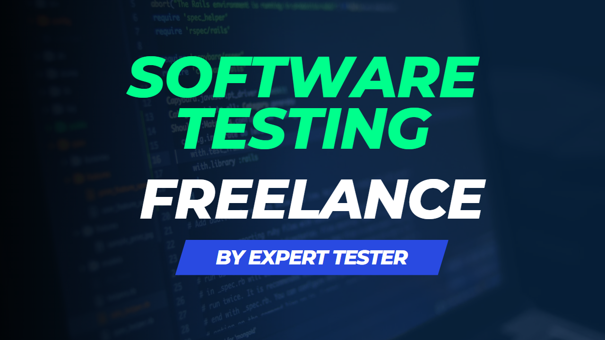

<!DOCTYPE html>
<html lang="en".></html>
<head>
<meta charset="UTF-8">
<title>Previous Company</title>
</head>
<body>
    <h2>Work experience</h2>
    <ul>
        <li>
            <h3>QA Analyst at Infor ltd</h3>
                <p>November 2022 - Actual - Canada, POS applications (Web, Kiosk and POS)
                    <a href="https://www.infor.com/products/point-of-sale">Infor POS Website</a>
                </p>
                    
        </li>
            
   
        <li>
            <h3>QC Analyst at Globant</h3> 
                <p>August 2021 - September 2022 - Uruguay, Internal Administration Applications for Grey Communications Group Ltd 
                    <ul>
                         <li><a href="https://www.globant.com/">Globant Website</a></li>   
                        <li><a href="https://www.grey.com/">Grey Communicatiopns GroupWebsite</a></li> 
                     </ul> 
                </p> 
                
        </li>
        
        <li>
            <h3>QA Tester at Infocorp</h3> 
                <p>November 2020 - August 2021 - Montevideo, Uruguay, Bank Aplications: Banks solutions for several clients 
                     <a href="https://infocorpgroup.com/en/">Infocorp Website</a>
                </p> 
                 
        </li>

       
        
        
        <li>
            <h3>Freelance </h3>
             <p>July 2017 - November 2020, Blogs | E-commerce | Intranet | Mobile Apps</p>
             
        </li>
    </ul>